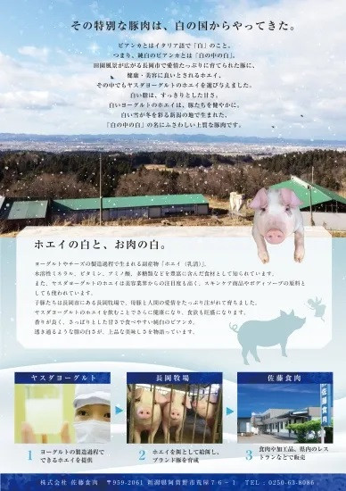
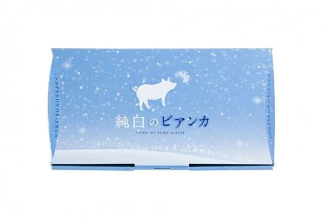

【2026年最新】純白のビアンカとは？
TVで話題の新潟産ブランド豚肉の特徴・購入方法・ふるさと納税まとめ
【NIKKEI DESIGN 2026年5月号掲載・TV放映実績】新潟産ブランド豚肉「純白のビアンカ」は業界専門誌にも取り上げられた本物のブランド肉。楽天公式店・ふるさと納税でお取り寄せ可能です。
「純白のビアンカ」——この美しい名前の豚肉を知っていますか？「どんな豚肉なの？」「なぜ"純白"なの？」「どこで買えるの？」——そんな疑問をお持ちの方はこの記事を最後まで読んでください。
テレビ放映・NIKKEI DESIGN 2026年5月号掲載と、メディアが相次いで注目する新潟産ブランド豚肉の全貌を徹底解説。楽天市場での購入方法からふるさと納税でお得に手に入れる方法、ブライダル引き出物としての活用まで、この記事1本で全てわかります。
純白のビアンカとは？なぜ今これほど話題なのか
🐷 名前の由来——イタリア語「Bianca（白）」に込められた意味
「純白のビアンカ」の「Bianca（ビアンカ）」は、イタリア語で「白」を意味します。この名前は単なるネーミングではなく、この豚肉最大の特徴である純白で美しい脂身を的確に表現しています。一般的な豚肉の脂が黄みがかっているのに対し、純白のビアンカは文字通り透き通るような白い脂質が特徴です。
- Bianca（ビアンカ）＝ イタリア語で「白」——脂の純白さと美しさを表現
- ブライダルとの親和性——白はウェディングカラー。引き出物に選ばれる深い理由
- NIKKEI DESIGN選出——ネーミングとブランド設計の完成度が業界でも高く評価
📍 2017年、新潟県阿賀野市で誕生
20種類以上の銘柄豚がひしめく新潟県で、後発ながら着実に頭角を現した——それが「純白のビアンカ」だ。
インパクトあるネーミングと、透き通るような純白の脂で消費者の心をつかみ、
新潟産ブランド豚肉の新たな顔として、いま最も注目を集めている。
📰 テレビ放映 ＋ NIKKEI DESIGN 2026年5月号掲載——ダブル権威の証明
「純白のビアンカ」は、テレビ放映の実績に加え、デザイン・ブランディングの業界誌として名高い『NIKKEI DESIGN』2026年5月号でも取り上げられた実績を持ちます。食品でありながらデザイン誌に掲載されたのは、商品名・パッケージ・ブランドストーリーの完成度の高さが評価されたから。食の美味しさだけでなく、「体験」としての価値が認められた稀有なブランド豚肉です。
🌾 新潟県産だからこそ実現できた3つのこだわり

純白の脂質
一般的な豚肉とは一線を画す、透き通るような白い脂。甘みがあり、くどさのない上質な脂質が特徴です。
新潟の豊かな環境
新潟県の清浄な環境と厳選された飼育環境がビアンカの品質を生み出します。佐藤食肉の技術と情熱が光ります。
化粧箱入りの高級感
全商品化粧箱入り・送料無料。贈答用・ギフトとしてそのまま渡せる完成されたパッケージです。
純白のビアンカ 商品ラインナップ4選【楽天公式店】
楽天市場の公式ショップ「佐藤食肉」では、用途に合わせて選べる4つの商品ラインを展開しています。いずれも化粧箱入り・送料無料で、自宅用はもちろんギフトにも対応しています。

純白のビアンカの中で最もスタンダードかつ人気の一品。500gたっぷりの豚バラ肉は、薄切りしゃぶしゃぶカットで、ポン酢でもゴマだれでも相性抜群。口の中でとろける純白の脂の甘みとやわらかな肉質は、一般的なスーパーの豚肉とは別次元の体験です。初めて純白のビアンカを試すなら、まずはここから。
- ¥3,980とラインナップ中で最もお試ししやすい価格帯
- 家族4人分のしゃぶしゃぶにちょうどよい500g
- 化粧箱入りでお中元・父の日ギフトにも対応

800gのボリュームたっぷり豚ロースは、焼肉・BBQ・ホームパーティーにぴったりの一品。純白の脂質がしっかりついたロース肉は、焼いたときに香ばしさと脂の甘みが同時に広がる絶品体験を届けます。炭火焼きはもちろん、家庭のホットプレートでも十分な美味しさを引き出せます。
- 800gで家族・グループBBQに最適なボリューム
- ロース特有のしっかりした肉質と甘い脂が特徴
- シンプルな塩・胡椒だけで素材の旨みを堪能できる

130g×6枚のポークステーキは、フライパンで焼くだけで絶品ディナーに変わる万能な一品。一枚ずつカットされているため、その日食べる分だけ解凍して調理できる使い勝手のよさも魅力。ブライダル引き出物としても人気が高く、受け取った側が必ず喜ぶ「外れのないギフト」として重宝されています。
- 130g×6枚で6回分の贅沢ディナーが楽しめる
- フライパン一つで調理が完結する手軽さ
- 引き出物・内祝い・誕生日に最適な高級感

骨付きの豪快なビジュアルが圧倒的インパクトを与えるトマホーク（骨付きロース）。約300〜400g×2本という贅沢なセットは、BBQやアウトドアで「今日の主役」として場の雰囲気を一気に盛り上げます。骨の周りに凝縮された旨みを骨ごとかぶりつく豪快な食べ方は、純白のビアンカの醍醐味そのもの。特別な誕生日・記念日ギフトにも印象的です。
- 骨付きのビジュアルで食卓・BBQが確実に盛り上がる
- 骨周りに凝縮された旨みがロースとは別次元の味わい
- サプライズギフトにインパクト抜群の演出ができる
目的別・どれを選ぶ？用途別選び方ガイド
「4種類あって迷う…」という方へ。シーン・目的別に最適な商品を一覧でまとめました。
| シーン・目的 | おすすめ商品 | 価格 | ポイント |
|---|---|---|---|
| 🍲 家族でしゃぶしゃぶ | ① バラしゃぶしゃぶ | ¥3,980 | 500gで家族4人分 |
| 🔥 BBQ・ホームパーティー | ② ロース焼肉 | ¥4,700 | 800gの大容量 |
| 🍽️ 普段の贅沢ディナー | ③ ポークステーキ | ¥4,700 | 6枚で6回楽しめる |
| 🎉 アウトドア・特別な日 | ④ トマホーク | ¥4,700 | 骨付きで豪快 |
| 🎁 お中元・お歳暮・御礼 | 全商品OK | ¥3,980〜 | 化粧箱入り・送料無料 |
| 💍 ブライダル引き出物 | ③ ポークステーキ | ¥4,700 | Bianca＝白＝ウェディングカラー |
| 🌿 ふるさと納税活用 | さとふる対応 | 実質2,000円〜 | 準備中（近日リンク設置予定） |
ふるさと納税（さとふる）でお得に購入する方法
🌿 ふるさと納税なら実質2,000円で手に入る！
純白のビアンカはふるさと納税の返礼品としてもお取り扱いがあります。さとふるを利用すれば、年収に応じた控除が適用され、実質2,000円の自己負担で高級ブランド豚肉をお取り寄せできます。
- さとふるで「純白のビアンカ」を検索する
- 寄附金額・返礼品を選択してお申し込み
- ワンストップ特例申請または確定申告で控除を受ける
- 自宅に純白のビアンカが届く！
- 年末（12月）前に申し込む——その年の控除枠を使い切るために余裕を持って
- ワンストップ特例制度を活用——確定申告不要。5自治体以内ならオンライン申請で完結
- 複数サイトを比較する——さとふる以外でも取り扱いがある場合は比較してから申し込みを
ギフト・ブライダル引き出物に選ばれる理由

純白のビアンカが贈り物に選ばれる理由は、味だけではありません。商品名・パッケージ・ブランドストーリーのすべてがギフトとして完成されているのが最大の強みです。
ブライダル引き出物として大人気
「Bianca（ビアンカ）」はイタリア語で「白」。純白のウェディングカラーと重なるネーミングが、結婚式の引き出物として絶大な支持を集めています。NIKKEI DESIGNにもそのブランド設計が評価されました。
化粧箱入りで見栄えも完璧
全商品が高級感ある化粧箱入り。そのまま手渡せるパッケージは、もらった側も開封の瞬間から特別感を演出します。
送料無料で気軽に贈れる
全商品送料無料。ネットで注文するだけで相手の自宅に直接お届け。遠方の方へのギフトにも追加コストなし。
年中使えるギフトシーン
お中元・お歳暮・父の日・母の日・敬老の日・誕生日・結婚祝い・内祝いと、年間を通じてあらゆるギフトシーンに対応。
- 肉好きの父・母・義父母への父の日・敬老の日プレゼント
- 結婚式の引き出物・内祝い（白＝純白＝ブライダルカラー）
- お世話になった方へのお中元・お歳暮・御礼
- 食通・グルメ好きへの誕生日・記念日プレゼント
まとめ｜純白のビアンカを今すぐ試すべき3つの理由
🥩 純白のビアンカ——選ばれる3つの理由
「一度食べたら普通の豚肉には戻れない」——そんな声が絶えない純白のビアンカ。自分へのご褒美にも、大切な人へのギフトにも、ぜひ一度試してみてください。
よくある質問（FAQ）
📖 関連記事